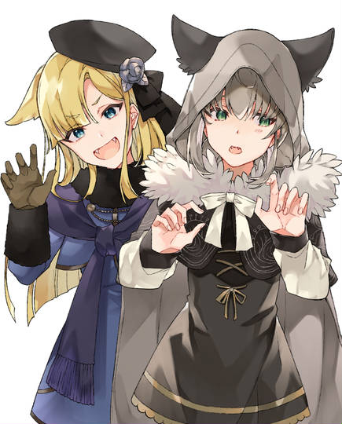
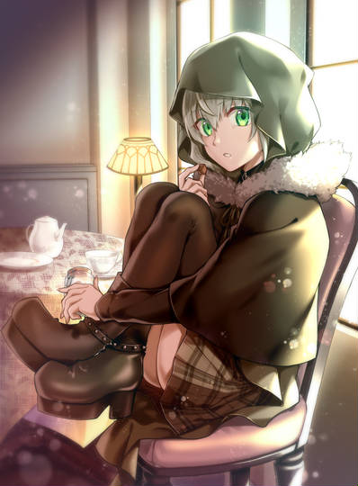
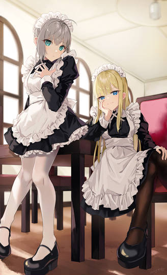
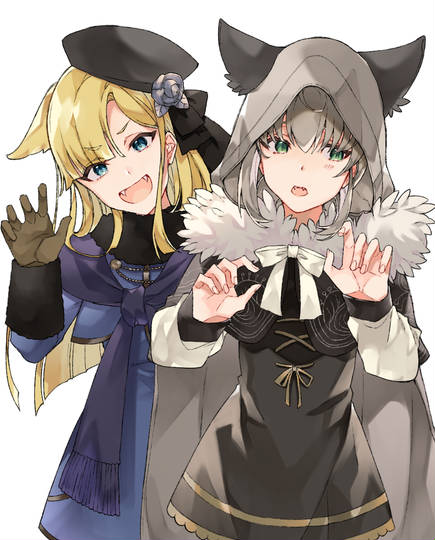
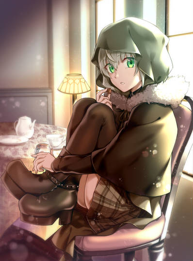
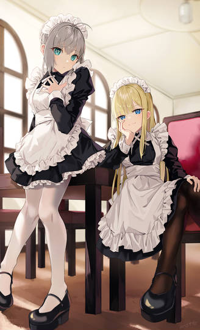
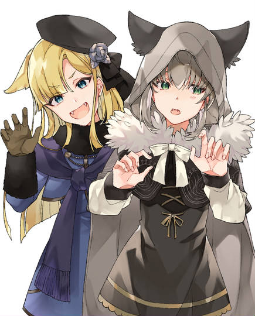
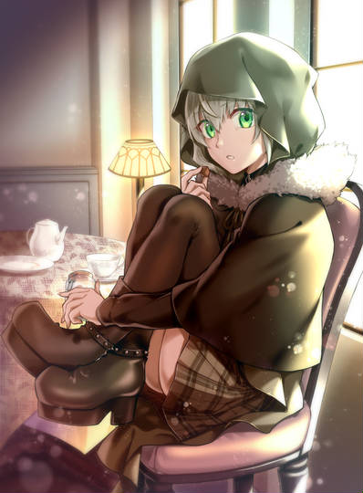
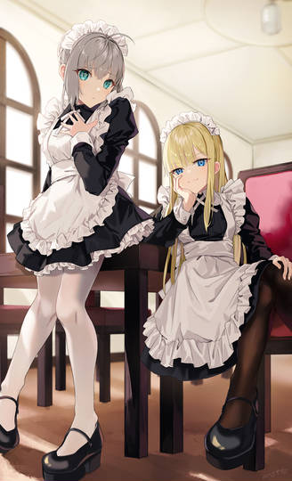

Gray And Relnes
 





莱妮丝·埃尔梅罗·阿奇佐尔缇是TYPE-MOON旗下的 《Fate》系列及其衍生作品的登场角色。最早于公式书 《Chracter material》中提到，正式登场于轻小说 《Fate/Apocrypha》第三卷，之后在轻小说 《君主·埃尔梅罗Ⅱ世事件簿》 中作为主要人物活跃。 埃尔梅罗的正统后继人，君主·埃尔梅罗Ⅱ世的义妹。赋予他“埃尔梅罗”之名，使其成为君主的罪魁祸首。身边总是带着水银质的女仆型自动人偶。 埃尔梅罗二世的义妹，埃尔梅罗派现任当家。在前任当家肯尼斯死后埃尔梅罗派陷入内忧外患时掌权，为拯救埃尔梅罗而赋予韦伯埃尔梅罗二世之名并让其为家族四处奔波。.
| 中文名 | 莱妮斯 |
|---|---|
| 外文名 | Reines |
| 别名 | 埃尔梅罗的公主、莱妮、柠檬妹、破坏Ⅱ世胃袋的恶魔 |
| 生日 | 3月7日 |
| 年龄 | 15岁 |
| 身高 | 149cm |
| 体重 | 42kg |
| 登场作品 | 《君主·埃尔梅罗Ⅱ世事件簿》 《Fate》系列 |
|---|---|
| 地址 | 英国伦敦时钟塔 |
| 身份 | 阿奇佐尔缇家当主、君主继承人 |
| 职业 | 魔术师 |
| 魔术属性 | 水 |
| 喜欢的事物 | 他人的不幸 |
| 讨厌的事物 | 无聊 |
格蕾（Gray）是TYPE-MOON旗下由三田诚所著的轻小说《君主·埃尔梅罗Ⅱ世事件簿》及衍生作品中的主要人物。在相关系列的其他作品里亦有登场。君主·埃尔梅罗Ⅱ世的入室弟子。总是用兜帽遮住脸的奇异少女。携带着装在鸟笼里的魔术礼装“亚德”作为侦探小说的华生役，在企划几乎最初的阶段就设定出来的角色。事件簿的企划在成立之前经历了蜿蜒曲折，但唯独她是基本没有变动。「拥有最优秀素质的守墓人，却害怕死灵的少女。而且她所持有的宝具的那位亚瑟王的……」，有着这样的角色宣传语。 最开始对二世保持着距离，然后逐渐慢慢加深关系的路线，是与系列化同时决定的。非常重视二世，但却是与恋爱关系滋味有别的师徒间的牵绊这一方向也是那时候决定的。从说出非常讨厌的师父那种话的第一卷数来，实在是走过了一段遥远的历程啊。
| 中文名 | 格蕾 |
|---|---|
| 外文名 | Gray |
| 别名 | 小灰、慢性子格蕾、灰色妖精 |
| 生日 | 6月17日 |
| 年龄 | 15岁 |
| 身高 | 154cm |
| 体重 | 42kg |
| 登场作品 | 《君主·埃尔梅罗Ⅱ世事件簿》 《Fate》系列 |
|---|---|
| 地址 | 英国伦敦时钟塔 |
| 身份 | 守墓人、村之神子 |
| 职业 | 守墓人 |
| 魔术属性 | 地 |
| 喜欢的事物 | 安静的房间、雪茄的芳香、古书的气味、能听到大家吵闹声的教室 |
| 讨厌的事物 | 明明已经死了，却还在地上行走之物 |
韦伯·维尔维特，TYPE-MOON旗下的《Fate》系列及其衍生作品的登场角色。第四次圣杯战争中Rider·伊斯坎达尔的御主（Master）。韦伯·维尔维特作为时钟塔的学生，因为家族的魔术师背景只有三代，经常被其他家族和导师蔑视。又因为不满导师肯尼斯·埃尔梅罗·阿奇博尔德的行为，偷走导师的英灵遗物参加第四次圣杯之战，想借此表现实力，得到所有人的承认。 第四次圣杯战争结束几年后，韦伯继承了“埃尔梅罗”之名，成为时钟塔十二学部之一——现代魔术科（诺利吉）的君主（Lord）。同时也是时钟塔最受欢迎的讲师。
| 中文名 | 韦伯·维尔维特 |
|---|---|
| 外文名 | Waver Velvet |
| 别名 | 君主·埃尔梅罗Ⅱ世、大本钟☆伦敦明星、天惠教授、掠夺公等 |
| 生日 | 10月3日 |
| 年龄 | 19岁 |
| 身高 | 157 至 186 cm(韦伯→Ⅱ世) |
| 体重 | 50 至 68 kg(韦伯→Ⅱ世) |
| 登场作品 | 《君主·埃尔梅罗Ⅱ世事件簿》 《Fate》系列 |
|---|---|
| 地址 | 英国伦敦时钟塔 |
| 身份 | 魔术师；时钟塔学生、Rider的御主、时钟塔讲师、现代魔术科君主及学部长 |
| 职业 | 讲师，君主 |
| 魔术阶位 | 祭位（Fes）（Ⅱ世） |
| 喜欢的事物 | 拼图、推理小说 |
| 讨厌的事物 | 梦想或霸气皆无之人 |


